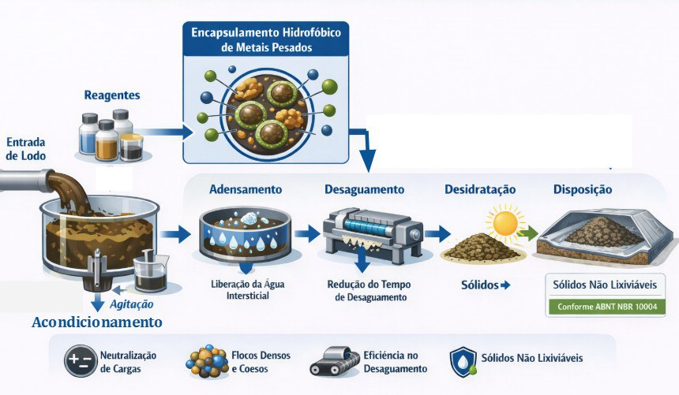
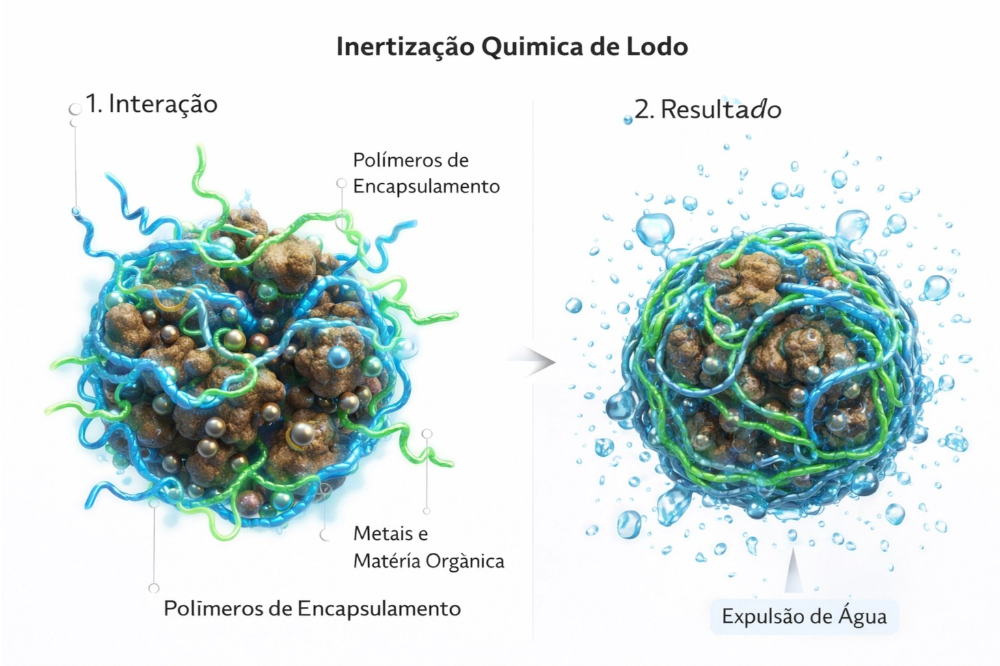
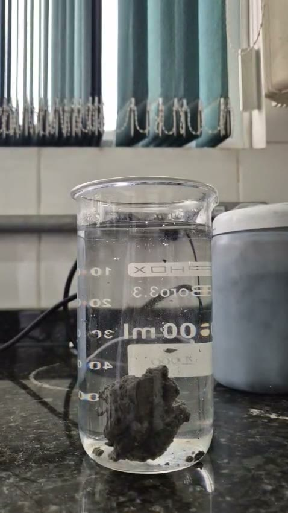

Problema / desafio do cliente
O lodo das estações de tratamento de esgoto é um dos maiores desafios técnicos, ambientais e econômicos do saneamento. Ele sai das ETEs com muita água, composição variável e pode conter metais e outros contaminantes, o que encarece e complica o desaguamento, o transporte e a destinação final.
Na maior parte dos casos, o lodo desaguado vai para aterro sanitário: transporta-se um grande volume de material úmido, a um custo alto, e ocupa-se rapidamente a capacidade dos aterros. Usos mais sustentáveis, como a recuperação de áreas degradadas ou o uso agrícola, só são possíveis se o lodo for estável e não liberar metais.
O desafio proposto para a ETE Barueri, da SABESP, foi uma rota que reduza o volume, acelere o desaguamento e torne o lodo quimicamente inerte, abrindo caminho para uma destinação mais barata e segura.
Contexto e características do processo
- Cliente: SABESP, com lodo da ETE Barueri (SP).
- O lodo de ETE é o resíduo sólido ou semissólido gerado pela remoção de sólidos suspensos, pela biomassa microbiana excedente e pela precipitação de compostos inorgânicos ao longo do tratamento.
- A tecnologia é um spin-off da tecnologia de tratamento de chorume da GETA, adaptada às características físico-químicas e reológicas dos lodos sanitários.
- A meta é um lodo que atenda à ABNT NBR 10004 e que tenha potencial de valorização em linha com a Resolução CONAMA nº 498/2020 (biossólidos).

Diagnóstico e dados analisados
- O lodo de ETE é uma matriz complexa: além de nutrientes, acumula poluentes que o tratamento convencional não remove por completo.
- São frequentes metais pesados (cádmio, chumbo, mercúrio, cromo, cobre e zinco), compostos orgânicos persistentes, fármacos e produtos de cuidado pessoal, surfactantes, retardantes de chama, ftalatos, PFAS e microplásticos.
- Esses contaminantes tendem a se concentrar na fase sólida ao longo do tratamento biológico e permanecem associados às partículas do lodo.
- Por isso o lodo tem potencial de lixiviação e risco ambiental quando é destinado de forma inadequada, sobretudo em aplicações no solo. A estabilização e a imobilização desses compostos são a condição para uma destinação segura.
Metodologia utilizada
- Caracterização do lodo e definição dos parâmetros críticos do processo.
- Ensaio de bancada com lodo da ETE Barueri: comparação entre o lodo bruto e o lodo inertizado em contato com água.
- Projeto de um piloto para avaliar, em condições reais, a dosagem ótima de reagentes, o comportamento reológico do lodo inertizado e o tempo de desidratação após o desaguamento.
- Avaliação do potencial de valorização do sólido tratado: biossólido para uso agrícola ou florestal (CONAMA 498/2020), material de cobertura diária em aterros e aproveitamento energético, a partir do poder calorífico.

Solução de engenharia desenvolvida
A solução é a aplicação controlada de um mix proprietário de polímeros de encapsulamento na etapa de desaguamento. Em contato com o lodo, os polímeros:
- neutralizam as cargas superficiais e agregam as partículas sólidas;
- encapsulam os metais em uma matriz polimérica hidrofóbica, que funciona como barreira físico-química e reduz a sua solubilidade e mobilidade;
- expulsam a água intersticial retida nos poros e na estrutura coloidal do lodo, formando flocos mais densos, coesos e estáveis.
O resultado é um sólido estabilizado, que não lixivia, com desaguamento mais rápido, maior teor de sólidos e menor volume final a ser manejado.

Tecnologias e processos envolvidos
- Inertização química com polímeros de encapsulamento (formulação própria da GETA).
- Condicionamento e floculação com sistema de preparo e dosagem automática de polímero.
- Desaguamento mecânico em filtro de discos ou prensa desidratadora.
- Oxidação complementar (opcional) para melhorar as condições do lodo.
- Ensaios de lixiviação e classificação do resíduo conforme a ABNT NBR 10004.
Modelagem, simulação e ferramentas computacionais
O piloto foi dimensionado para gerar os dados de engenharia da escala real:
| Parâmetro | Descrição |
|---|---|
| Objetivo | Avaliar a desidratação de lodos em condições reais de operação |
| Vazão de projeto | Até 20 m³/h, em operação contínua |
| Alimentação | Bombas helicoidais, adequadas a lodos de alta viscosidade |
| Condicionamento químico | Preparo e dosagem automática de polímero |
| Dosagem de polímero | Cerca de 3 mL/L, ajustável conforme o lodo |
| Equipamento principal | Prensa desidratadora / filtro de discos (separação sólido–líquido) |
| Tratamento complementar | Agente oxidante (opcional) |
| Desempenho esperado | Redução mínima de 50% no teor de umidade do lodo |
| Controle | Painel elétrico de comando, proteção e automação |

Resultados obtidos
- No ensaio com lodo da ETE Barueri, o lodo inertizado separou-se da água, com os sólidos sedimentados e a água clara, enquanto o lodo bruto permaneceu disperso e turvo.
- Sólido estabilizado e não lixiviável, em conformidade com a ABNT NBR 10004.
- Flocos mais densos e coesos, com desaguamento mais eficiente, mais sólidos no lodo tratado e menos volume para transportar.
- Destinação mais segura e versátil: aterro com menor impacto ou uso benéfico, como recuperação de áreas degradadas e produção de biossólidos (CONAMA 498/2020).
- Piloto de 20 m³/h especificado, com expectativa de redução mínima de 50% na umidade do lodo.
CAPEX/OPEX e análise técnico-econômica
Seção oculta: este case não divulga valores econômicos.
Escopo e responsabilidades da GETA
A GETA foi responsável por:
- desenvolvimento da tecnologia e da formulação de polímeros de encapsulamento;
- ensaios de inertização com lodo da ETE Barueri;
- concepção e dimensionamento do sistema piloto de 20 m³/h;
- avaliação das rotas de valorização do lodo tratado.
Principais entregáveis
- Brief técnico da tecnologia de inertização química de lodos de ETE.
- Resultados do ensaio de bancada com lodo da ETE Barueri.
- Especificação do sistema piloto (equipamentos, dosagem, controle e desempenho esperado).
Galeria
